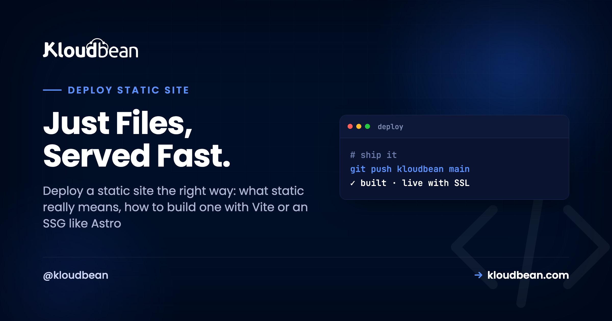
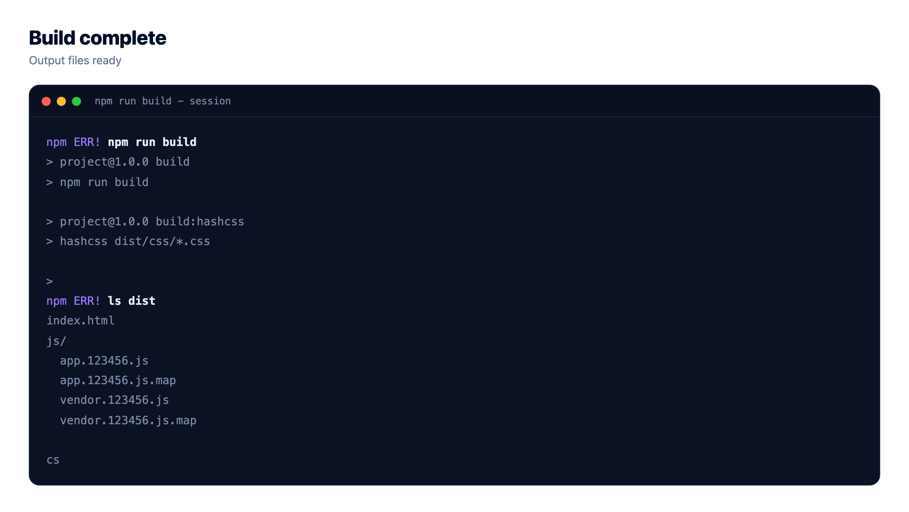
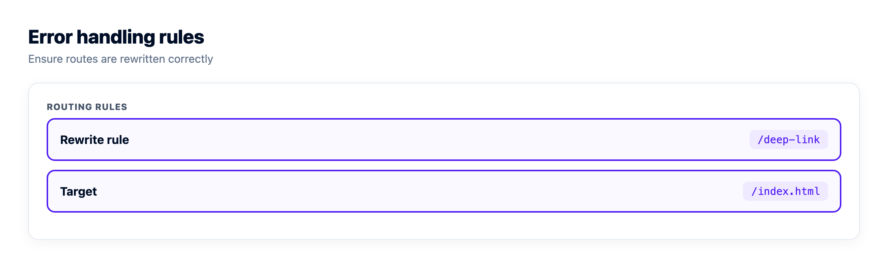
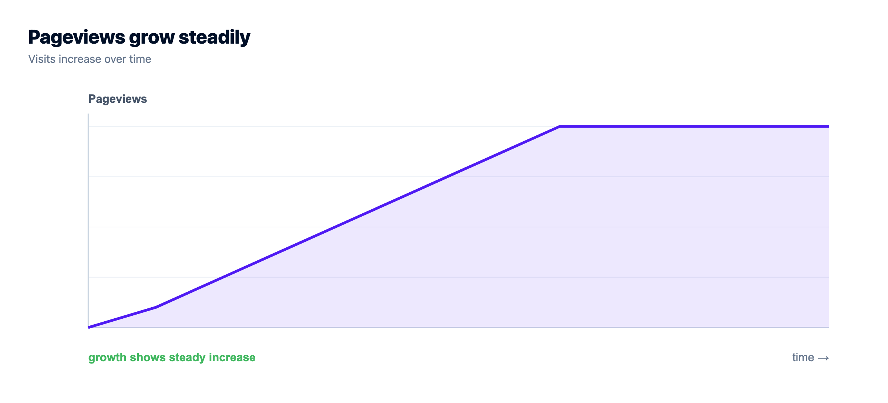

How to Deploy a Static Site (and What Static Really Means)

You can deploy a static site in about the time it takes to make coffee, and it'll be the cheapest, fastest, most secure thing you ever host. A static site is just built files: HTML, CSS, and usually a little JavaScript, with no server-side code running when someone visits. That's the whole trick. Whether you hand-wrote the HTML or ran npm run build on a React or Astro project, the output is a folder of plain files that a web server hands out as-is.
So why do people overthink it? Mostly because the word "static" gets muddy. A React app feels dynamic, it has buttons and state and fetches data, yet it ships as static files. Meanwhile a WordPress blog looks like plain pages but runs PHP on every request. This guide clears that up, shows you what actually produces a static site, and walks the real path to host a static website with a custom domain and SSL.
Build your project into a folder of static files. Run npm run build to get a dist/ or build/ folder, or use a static site generator like Astro, Hugo, Eleventy, or Jekyll that outputs one. Upload that folder to a static host, point your custom domain at it, and turn on free SSL. There's no server process to keep alive, so there's almost nothing to patch or crash. On Kloudbean, static site hosting is free and includes a custom domain, free SSL, and built-in visit analytics.
What is a static site, really?
A static site is a set of files that the server sends back exactly as they sit on disk. Request /about, get about.html. No database query, no template rendered on the fly, no code executed to build the response. The file was finished before anyone asked for it.
A dynamic site is the opposite. Code runs on every request. PHP, Node, Python, Ruby, whatever, it looks at who you are and what you asked for, maybe hits a database, and assembles the HTML right then. WordPress, a Laravel app, a Django backend: all dynamic. Powerful, and also a running process you have to secure, patch, keep alive, and scale.
Here's the part that trips people up. "Static" describes the server, not the page. A static page can be wildly interactive in the browser. The JavaScript still runs, it just runs on the visitor's machine, not yours. The server only ever handed over files. If you want the mental model that sits under every deploy, static or not, read how to deploy any app first. Static hosting is the simplest instance of it.
What actually produces a static site?
Three roads lead to the same place, a folder of plain files.
Hand-written HTML. The original static site. You write index.html, a stylesheet, maybe one script, and that folder is your whole site. No build, no tooling. It's underrated for a landing page or a docs stub.
A bundler build. This is where most confusion lives. A Vite project (React, Vue, Svelte) or an old Create React App runs a build and spits out a folder of static files. The framework is a development convenience. The thing you ship is plain HTML, CSS, and JS.
npm install
npm run build # Vite output lands in dist/, CRA lands in build/A static site generator (SSG). Tools like Astro, Hugo, Eleventy, and Jekyll take your content (Markdown, templates, data) and pre-render every page to HTML at build time. You get a folder of finished pages. Astro and Hugo are fast and popular right now, Jekyll is the old reliable behind a lot of GitHub Pages sites, and Eleventy is a favorite when you want zero framework baggage.
npm run build # Astro -> dist/
hugo # Hugo -> public/
npx @11ty/eleventy # Eleventy -> _site/
bundle exec jekyll build # Jekyll -> _site/Even the big meta-frameworks can produce static output. Next.js has a static export (output: 'export') that writes an out/ folder, and Nuxt has nuxt generate. Whatever the tool, the deliverable is the same shape: a build output folder you can serve anywhere.

Common tools and the folder they build
If you know your tool, you know your output folder. That folder is the only thing hosting cares about.
| Tool | Build command | Output folder |
|---|---|---|
| Plain HTML/CSS/JS | none | your folder as-is |
| Vite (React, Vue, Svelte) | npm run build | dist/ |
| Create React App | npm run build | build/ |
| Astro | npm run build | dist/ |
| Hugo | hugo | public/ |
| Eleventy (11ty) | npx @11ty/eleventy | _site/ |
| Jekyll | jekyll build | _site/ |
| Next.js (static export) | next build | out/ |
Is a React app static or dynamic?
Short answer: a plain React app (a single-page app built with Vite or CRA) is static. You build it, you get files, and those files run in the browser. The server never executes your React code. So yes, you host a React SPA exactly like any other static site.
The confusion comes from server-side rendering. If you run React through Next.js in its default server mode, or use any framework that renders pages per request on a Node process, that's not static anymore. Code runs on the server for each visit, which means you need a running app, not a file host. Same for a Remix or SvelteKit app in server mode, which is why deploying a Remix app to production and deploying a SvelteKit app the right way both follow the Node server path instead of this one. With SvelteKit the giveaway is which adapter you build with: the static adapter puts you back here, the Node adapter does not.
So the test isn't the framework, it's whether anything runs on the server at request time. Prerender everything, ship files, it's static. Render per request, it's dynamic. If your React project has grown a real backend, the full path lives in deploy a full-stack React app to production.
How does static hosting actually work?
It's refreshingly boring, and that's the point. A web server (Nginx, usually) sits on a machine with your files. A request comes in for /pricing, the server finds pricing.html, sends it back, done. Put a CDN in front and copies of those files get cached at edge locations near your users, so the round trip is short. Wrap the whole thing in TLS and it's served over HTTPS.
Because nothing executes per request, a static site is genuinely hard to break. No app process to crash at 2am. No runtime to patch when a CVE drops. No database connection to exhaust. The classic web attacks that target server code (SQL injection, a vulnerable dependency running server-side) mostly don't apply, because there is no server code. You still secure the pipeline and the headers, but the surface is tiny.
It's also why static sites feel instant. There's no work to do. The file is ready, the CDN already has it, the browser gets bytes. If the terms CDN and edge caching are fuzzy, what a CDN is and how it works breaks it down, and how SSL and TLS work covers the HTTPS layer.
Why does my SPA 404 when I refresh a deep link?
This one bites almost everyone who deploys a single-page app, so learn it before it eats your afternoon. Your React or Vue SPA uses client-side routing. The router lives in JavaScript. When you click around inside the app, the URL changes to /dashboard but no request ever goes to the server. The router just swaps what's on screen.
Now hit refresh on /dashboard, or paste that link to a colleague. The browser asks the server for /dashboard. But there is no dashboard.html file. You only ever built index.html. The server shrugs and returns a 404.
The fix is a fallback rule: for any path the server can't find as a file, serve index.html anyway, and let the client router take over once the page loads. On Nginx that's one line:
location / {
try_files $uri $uri/ /index.html;
}On file-host style platforms the same idea is a redirect rule (a _redirects file with /* /index.html 200, for example). Any static host worth using lets you set this. If deep links 404 in production but work locally, this rewrite is almost always what's missing. A fully prerendered SSG site (Astro, Hugo) doesn't hit this, because it built a real file for every route.

What about the API? The static/backend boundary
Here's where honesty matters. Static hosting covers your front end. It does not run your backend. If your site fetches data from an API, that API has to live somewhere: a running app process with a database behind it, hosted separately from the files.
So a typical setup is two pieces. The static front end (your built dist/) served fast and cheap, and a managed app plus database serving the API. Your front-end JavaScript calls the API over HTTPS. Two things you'll need to get right: point the front end at the API's real URL (usually through a build-time environment variable), and configure CORS on the API so the browser is allowed to call it from your domain. Skip the CORS step and you'll watch requests fail in the console with a cross-origin error while the API itself works fine in curl.
Don't put secrets in the static bundle. Anything you build into front-end JS is public, full stop. API keys, database credentials, tokens: those belong on the server side of that boundary, never in the files you ship to the browser.
How do I deploy a static site with a custom domain and SSL?
Now the concrete path. On Kloudbean, static site hosting is free, and the flow is short because there's no server to configure. Here's the shape of it.
1. Build your files locally (or let the platform build them)
Run your build once to confirm the output folder is what you expect. Open dist/ (or build/, or public/) and check that index.html is there with your assets. That folder is your entire site. If you deploy from Git, you don't upload the folder yourself, you tell the platform the build command and the output directory and it builds for you on each push.
2. Connect Git and set the build
Point the static site at your GitHub repo, pick a branch, and set the build command (npm run build) and the publish directory (dist/). Every push then rebuilds and redeploys automatically, with live build logs streaming in the console so a failed build shows you the exact line instead of a spinner. That auto-deploy loop is the same one covered in CI/CD auto-deploy from GitHub.


3. Add your custom domain and turn on free SSL
Add your domain, then create the DNS records your host shows you (usually an A record or a CNAME) at your registrar. Once DNS points at the site, issue a free auto-renewing SSL certificate so it loads over HTTPS. You don't buy or manually renew anything. It's one click and then it renews itself before it expires.

That's it. Files built, domain pointed, certificate live. Your static website is online, cached, and encrypted, at no hosting cost.
When a static site isn't enough
Static is perfect right up until you need something to run on the server: user logins, a database write, a checkout, a per-request API. At that point you don't throw away the static site, you add a backend beside it.
This is where staying on one platform pays off. Kloudbean gives you free static hosting for the front end, and the same dashboard runs managed application servers (Node, Python, PHP, Ruby, Java, and more), seven managed databases (MySQL, MariaDB, PostgreSQL, Redis, Memcached, Elasticsearch, MongoDB), and built-in object storage for files and uploads. So you can launch a static landing page today and grow into a full app without switching hosts or learning a new console. When the backend arrives, adding a managed database to your app and understanding what a managed server handles for you are the next two reads.
One honest note on speed. Free static hosting serves from a server with SSL, which is fast for most audiences. If you serve a truly global, latency-critical audience, Cloudflare edge caching is available as an add-on to push content to the edge. For a landing page or a docs site, you likely won't need it.
You built the app. Give it a real home.
Run the app as an always-on process with managed databases, Redis, object storage, and automatic backups beside it. Deploy from Git with live build logs, and keep the infrastructure someone else's problem.
- ✓ Managed databases
- ✓ Always-on processes
- ✓ Object storage
- ✓ Automatic backups
- ✓ Free SSL
- ✓ Git deploy
- ✓ Free migration
FAQ
What is a static site?
A static site is a set of files (HTML, CSS, and usually some JavaScript) that a web server sends back exactly as they are, with no server-side code running per request. The pages are finished at build time, not assembled when someone visits. That makes static sites fast, cheap to serve, and very hard to break.
How do I deploy a static site?
Build your project into a folder of static files, either by running npm run build or by using a static site generator like Astro or Hugo. Upload that output folder to a static host, or connect the Git repo and let the host build it. Then point your custom domain at the site and enable free SSL. There is no server process to run.
Is a React app a static site?
A plain React single-page app built with Vite or Create React App is static. You build it into files, and the JavaScript runs in the visitor's browser, not on your server. It stops being static only if you render pages on the server per request, for example Next.js in its default server mode.
Do I need a server to host a static website?
Not a running app server, no. A static website is just files, so a plain web server or a static host serves them directly. You only need a running server if part of your site executes code on each request, such as a login, a database write, or an API.
How do I add a custom domain and SSL to a static site?
Add the domain in your host, then create the DNS records it shows you (an A record or a CNAME) at your registrar. Once DNS resolves to the site, issue a free auto-renewing SSL certificate so it loads over HTTPS. On Kloudbean this is included with free static hosting and renews automatically.
Why does my single-page app return a 404 when I refresh a deep link?
Because your SPA routes in the browser, not on the server, so a path like /dashboard has no matching file. When you refresh, the server looks for that file, fails, and returns a 404. Fix it with a fallback rule that serves index.html for any unknown path, then the client router takes over.
What is the difference between a static site and a dynamic site?
A static site serves pre-built files as-is, with no code running per request. A dynamic site runs code on the server for every request, often querying a database to build the page. Static is faster and safer to host, dynamic is needed when content is personalized or changes per user.
Can a static site talk to a database or an API?
Yes, but the database and API must be hosted separately as a running backend. Your static front end calls that API from the browser over HTTPS, and you configure CORS on the API so the browser is allowed to. Never put database credentials or secrets in the static bundle, since anything you ship to the browser is public.
Is static site hosting free on Kloudbean?
Yes. Kloudbean offers free static site hosting that includes a custom domain, free auto-renewing SSL, and built-in visit analytics. When your project grows a backend, the same dashboard runs managed apps, seven managed databases, and object storage, so you can scale up without changing platforms.